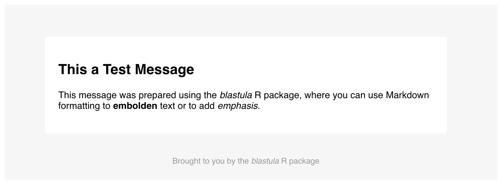

After we create the an email_message object with compose_email(), we can choose to send it through an SMTP server using blastula’s smtp_send() function. There is some system setup required before sending a blastula email message via SMTP. The main considerations are:
mailsend-go binaryWe’ll go through each of these setup steps before getting into several sending examples with smtp_send().
mailsend-go
The blastula package is moving toward using a new binary for smtp mailing that’s provided by the mailsend-go project. This binary is cross-platform and works on Windows, macOS (via Homebrew), and Linux (Debian and RPM packages are available).
Get the latest 64-bit or 32-bit release.
Unzip and copy mailsend-go-dir\mailsend-go.exe to the Windows PATH. Optionally, we can place the executable in the working directory of the R project that is sending email.
Ensure that Homebrew is installed. Then use the following to install mailsend-go:
$ brew tap muquit/mailsend-go https://github.com/muquit/mailsend-go.git
$ brew install mailsend-goGet the latest release of the Debian package. Then use the following to install mailsend-go:
$ sudo dpkg -i mailsend-go_linux_64-bit.deb Get the latest release of the RPM package. Then use the following to install mailsend-go:
$ rpm -Uvh mailsend-go_linux_64-bit.rpmBefore using Gmail to send out email through blastula, there is a key Gmail account setting that must changed from the default value. We have to allow Less Secure Apps to use your the Gmail account. Details on how to make this account-level change can be found in this support document.
While we can provide SMTP login and configuration information directly whenever we send email, it can be convenient to store this data for easy retrieval. It should be noted that the manually specifying credentials is more secure since no sensitive information is ever stored on disk (and password entry is obscured). Should you want to store credentials on-disk, however, there are two methods available for this:
The first method is more secure since access to the system-wide key-value store requires authentication. The second is less secure since it is the user’s responsibility to manage the resulting human-readable JSON file. We’ll provide examples on how to use the both options effectively.
We can store email credentials in the system key-value store with the create_email_creds_key() function. Here is an example showing how to create an entry with an id of "gmail_creds".
# Store SMTP credentials using the
# system's secure key-value store;
# provide the `id` of "gmail"
create_smtp_creds_key(
id = "gmail",
user = "user_name@gmail.com",
host = "smtp.gmail.com",
port = 465,
use_ssl = TRUE
)When executing this function, there will always be a prompt for the password (i.e., there is no password argument in this function).
We can also use preset SMTP settings. For example, if we would like to send email through Gmail, we can supply provider = gmail to not have to worry about the SMTP server details.
# Store SMTP credentials in the
# system's key-value store with
# `provider = "gmail"`
create_smtp_creds_key(
id = "gmail",
user = "user_name@gmail.com",
provider = "gmail"
)The credentials data can be later retrieved during email sending with the creds_key() credentials helper. Should you need to know which keys are set in the key-value store, we can use the view_credential_keys() function (which shows all keys by id, key_name, and username).
We can store email credentials in a file using the create_email_creds_file() function. Here is an example showing how to create a credentials file with the name "gmail_creds" in the working directory.
# Store SMTP credentials as a file
# with the filename "gmail_creds"
create_email_creds_file(
file = "gmail_creds",
user = "user_name@gmail.com",
host = "smtp.gmail.com",
port = 465,
use_ssl = TRUE
)We can also use preset SMTP settings as with the create_smtp_creds_key() function. To send email through Gmail we can supply provider = gmail to avoid supplying host, port, and use_ssl.
# Create a credentials file for sending
# email through Gmail
create_email_creds_file(
file = "gmail_creds",
user = "user_name@gmail.com",
provider = "gmail"
)The credentials data from this file can later retrieved during email sending with the creds_file() credentials helper.
Once the mailsend-go binary is installed and on the system path, we can use the in-development smtp_send() function for sending email.
Currently, only the development version of the package (on GitHub) has the smtp_send() function. The other function for sending email, send_email_out(), will undergo deprecation.
Let’s create a simple test message with the prepare_test_message() function.
# Create the test message, this returns
# an `email_message` object
test_message <- prepare_test_message()
# Preview the message in the Viewer
test_message
The test message
Now that this test message is available, we can experiment with the sending of it to a personal email account. Here are three examples, each use a different method for supplying SMTP credentials.
# Sending email to a personal account
# through manual specification of SMTP
# credentials
test_message %>%
smtp_send(
from = "personal@email.net",
to = "personal@email.net",
subject = "Testing the `smtp_send()` function",
credentials = creds(
user = "user_name@gmail.com",
provider = "gmail"
)
)# Sending email to a personal account
# using the credentials key
test_message %>%
smtp_send(
from = "personal@email.net",
to = "personal@email.net",
subject = "Testing the `smtp_send()` function",
credentials = creds_key(id = "gmail")
)# Sending email to a personal account
# using the on-disk credentials file
test_message %>%
smtp_send(
from = "personal@email.net",
to = "personal@email.net",
subject = "Testing the `smtp_send()` function",
credentials = creds_file(file = "gmail_creds")
)If the SMTP credentials are correctly set, we will get the following message in the console:
The email message was sent successfully.Should you have the mailsend-go executable in a location that is not in the system path or in the working directory, we can specify its exact location using the binary_loc argument.
# Use the `binary_loc` to provide the
# location of the `mailsend-go` binary
test_message %>%
smtp_send(
from = "personal@email.net",
to = "personal@email.net",
subject = "Testing the `smtp_send()` function",
credentials = creds(
user = "user_name@gmail.com",
provider = "gmail"
),
binary_loc = "/path/to/mailsend-go"
)Want to debug the usage of the mailsend-go command during sending? We can use the echo and dry_run arguments. Setting echo to TRUE will be print the system command for mailing via mailsend-go to the console. Setting dry_run to TRUE will return information on the SMTP sending options. Furthermore, the function will stop short of actually sending the email message out.
# Perform a dry run of sending email and
# echo the system command
test_message %>%
smtp_send(
from = "personal@email.net",
to = "personal@email.net",
subject = "Testing the `smtp_send()` function",
credentials = creds(
user = "user_name@gmail.com",
provider = "gmail"
),
echo = TRUE,
dry_run = TRUE
)The command for sending the email message is:
/usr/local/bin/mailsend-go -sub Testing the `smtp_send()` function -smtp smtp.gmail.com -port 465 -ssl auth -user user_name@gmail.com -pass ***** -from personal@email.net -to personal@email.net attach -file /var/folders/qz/mfwzxz914n16nj4__bnsbccr0000gn/T//RtmpKNmbDG/file583527f125f9.html -mime-type text/html -inline
This was a dry run, the email message was NOT sent.This covers the basics on how to get up and running on sending emails through blastula’s SMTP functionality. Again, this article applies only to the in-development version of blastula, which can be installed using:
Because the smtp_send() is quite new, there are bound to be some problems with it. If you encounter a bug or just have a question or feature request, please file an issue.